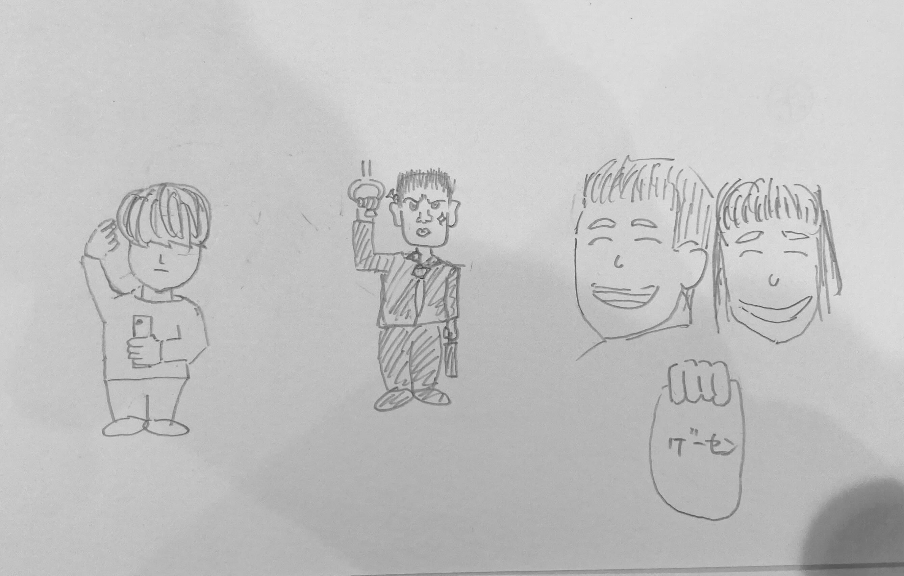

観察課題

今回は通学中に気になった人たちを紹介します。
左から「電車の中でずーっと前髪をいじっている人」「電車の中で周りをずっと睨んでいる人」「ゲーセンから出てきためっちゃ笑顔なカップル」です。
前髪をいじっていた人に対しての第一印象は、「髪切れよ！」です。
睨んでいた人に対しては「単純に怖い」「どうした？？」っていう印象。
ゲーセンカップルは、「めっちゃ微笑ましい」という印象を抱きました。